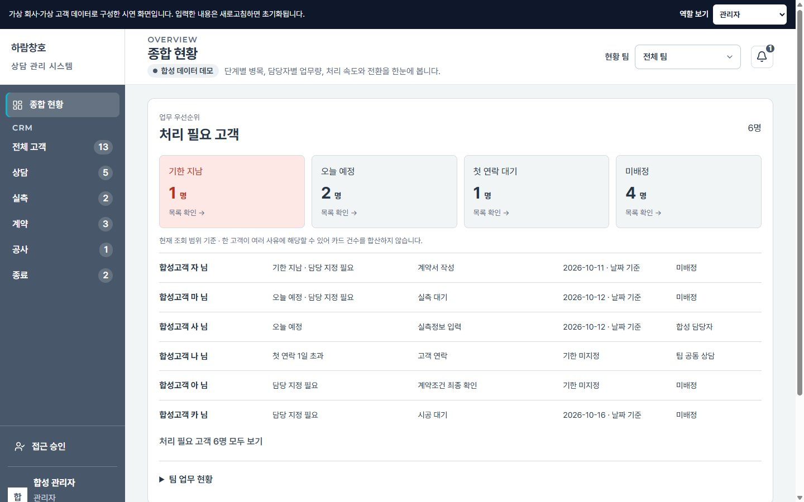
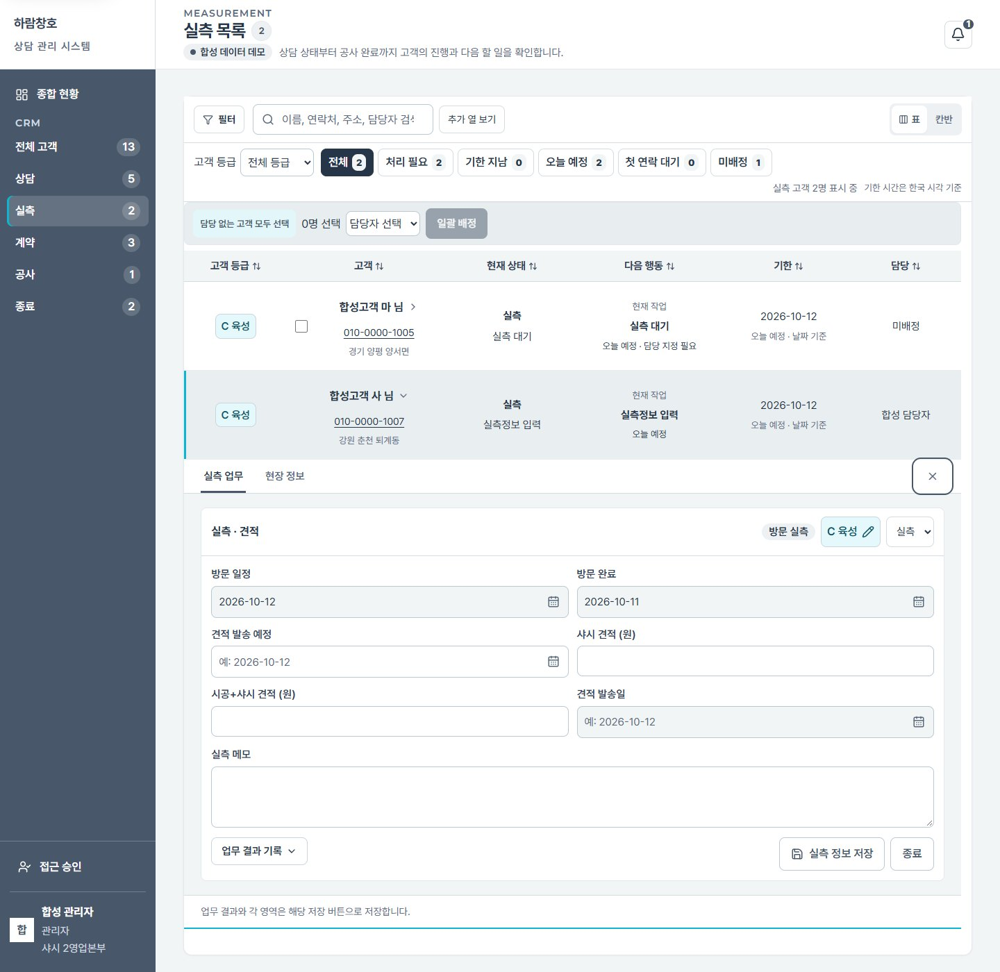
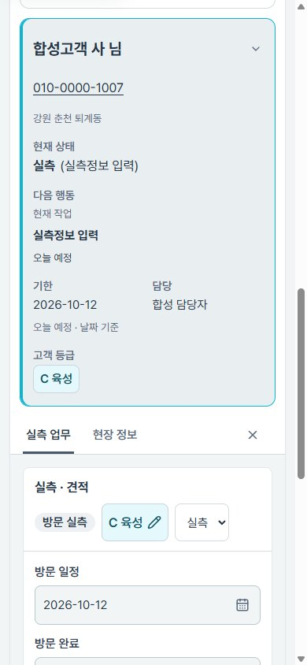

한눈에 보기
- 어디서 · 무슨 일
- BX컨설팅 세일즈포스팀 인턴 · 고객사에 CRM 서비스를 제안하기 위한 프로토타입
- 주어진 과제
- 광고로 들어온 고객의 상담부터 공사까지를 엑셀 한 줄로 관리하고 있어, 누가 어느 단계를 맡았고 어디서 막혔는지 보이지 않았습니다.
- 내 역할
- 요구 정리·기획 문서화(범위 정의, 요구 목록, 작업 전이표)·화면 결정·검수. 요구마다 출처(팀장 피드백과 본인 판단)를 나눠 기록했고, 구현은 역할을 나눈 AI 코딩 에이전트에 맡긴 뒤 PC·모바일 화면으로 직접 확인했습니다.
- 결과
- 고객 목록·상세·단계 이동·종료 흐름과 권한·로그인 구조를 갖춘 제안용 테스트 빌드(v3.2.0)를 만들었고, 개선 과제 24건을 기록·관리했습니다. 가상 회사·가상 고객 데이터로 직접 눌러 볼 수 있는 시연 화면도 따로 공개했습니다.
- 이 경험으로 할 수 있는 일
- 현업의 엑셀·수작업 흐름을 단계와 권한이 있는 도구로 옮길 때, 요구를 정리해 AI 개발 도구에 맡기고 결과를 화면으로 검수할 수 있습니다.
기획 흐름
- 범위 정하기제품 범위 정의서(2026.09.18). 광고 리드 수집부터 상담·후속 조치·성과 확인까지 MVP 범위, 성공 기준 6개, 사용자 역할 4종을 정했습니다.
- 구조 다시 짜기단계형 CRM 재구축 계획. 엑셀 한 줄 장부를 상담 → 실측 → 계약 → 공사 → 종료 흐름으로 바꾸고, 원본 24열을 새 단계로 옮기는 매핑과 이관 원칙(기존 고객·메모·이력 보존)을 정했습니다.
- 요구 정의요구 목록. 팀장 피드백과 본인 판단을 출처 표시와 함께 번호 붙은 요구로 정리하고, 개선 요청마다 완료 기준을 붙였습니다.
- 업무 흐름 설계작업 전이표 v1.1. 팀장이 전달한 상태 전이 명세를 정규화해 109개 결과 분기로 만들고, 분기마다 필수 입력·다음 작업·남길 기록을 정했습니다. 필수값 보강과 예외 처리는 제가 제안했습니다.
- 승인 범위 나누기승인 요청서. 정해지지 않은 운영 규칙(부재중 재연락 간격, 계약 후 취소 처리 등)은 추천안으로 만들어 설계와 로컬 구현만 승인하고, 운영 DB 반영·커밋·배포는 별도 승인으로 남겼습니다.
문서는 AI 에이전트와 함께 쓰고, 무엇을 만들지(요구와 기준)는 제가 정하고 승인했습니다. 아래는 그 문서의 일부입니다.
기획 문서
요구 정의, 고객 흐름, 작업 전이표의 일부를 발췌했습니다.
기획 문서 발췌 보기
요구 정의
요구마다 번호와 출처를 붙였습니다. 개선 요청마다 같은 방식으로 기록했고, 아래는 목록 화면 개선 요구 15개 중 일부입니다.
| 번호 | 요구 | 출처 |
|---|---|---|
| R1 | `세부 단계` 칸을 모든 탭의 맨 왼쪽에 둔다 | 팀장 피드백 + 본인 판단 |
| R2 | `유입 경로`는 상담 탭에만 둔다 | 팀장 피드백 + 본인 판단 |
| R4 | `지역` 칸을 추가한다(`서울 강동 천호동` 형식, 상세주소는 뺀다) | 팀장 피드백, 표기는 본인 판단 |
| R11 | 단계를 넘길 때 다음 단계 담당이 비어 있으면 현재 담당자가 자동으로 이어받는다 | 본인 판단 |
| R13 | 콜센터 신입 직원이 질문 없이 목록을 읽을 수 있다 | 팀장 피드백 |
| R15 | UI를 바꾼 뒤 PC·375px 화면을 직접 캡처해 확인한다 | 팀장 피드백 |
고객 흐름
고객 한 명이 지나가는 5단계와, 단계마다 끝나는 조건·그 단계에서만 보여 줄 입력입니다. 단계형 재구축 계획에서 가져왔습니다.
| 단계 | 끝나는 조건 | 이 단계에서만 보일 입력 |
|---|---|---|
| 상담 | 비방문 또는 방문 견적으로 확정 | 첫 연락, 접촉 결과, 상담 메모, 고객 요구, 견적 방식 |
| 실측 | 견적 발송 완료 | 비방문은 발송 예정일·금액, 방문은 방문 일정·결과·금액 |
| 계약 | 공사 예정일 확정 | 계약 예정, 미팅 일정, 계약금액, 계약 상태, 공사 예정일 |
| 공사 | 공사 완료 | 공사 일정, 현장 특이사항, 사진, 완료일, 완료 메모 |
| 종료 | 완료 또는 실주 | 종료 사유, 전체 이력 열람 전용 |
작업 전이표
고객 한 명에게는 항상 하나의 현재 작업만 있고, 결과를 기록해야 다음 작업으로 넘어갑니다. 전이표 v1.1(109개 분기) 중 일부이며, C는 상담, M은 실측, K는 계약, P는 공사, X는 종료 단계의 작업 코드입니다.
| 현재 작업 | 결과 | 필수 입력 | 다음 작업 |
|---|---|---|---|
| C02 고객 연락 | 연락 성공 | 결과만 | C05 |
| C02 고객 연락 | 부재중 | 추가 입력 없음 | C02 다시 연락 (3차 C04, 4차 X01 후보) |
| C02 고객 연락 | 나중에 통화 | 통화 가능 시각 | C03 |
| C06 기본 상담정보 확인 | 확인 완료 | 주소·면적·유형·범위·인테리어·거주·희망시기 (모름은 직접 선택) | C07 |
| C07 | 바로 방문 실측 | 실측 담당 확정 | M01 |
| C07 | 비방문 진행 | 견적 방식 | C08 |
설계·구현 내용
- 데이터 옮기기원본 24열을 새 단계·세부 상태로 옮기는 대응표를 먼저 만들고, 테스트 이관을 통과시킨 뒤 본 이관을 했습니다.
- 단계별 화면상담은 연락·메모, 실측은 일정·견적, 계약은 금액·공사일처럼 그 단계에 필요한 입력만 보이게 했습니다.
- 화면 기준"처음 쓰는 직원도 질문 없이 쓸 수 있을 것"(팀장 피드백)을 기준으로 색·버튼·용어를 덜어냈습니다.
- 단계 이동 규칙담당자는 다음 단계로 이어지고, 실측은 날짜·담당자 없이 확정되지 않으며, 종료 사유는 칩으로 고르게 했습니다.
- 권한과 로그인관리자·중간관리자·담당자 3역할, 관리자 승인 후 접근, 비밀번호 없이 구글 로그인·이메일 코드만 허용했습니다.
- 시연 화면실제 고객 정보 없이 가상 회사(하람창호)와 가상 고객 13명으로 시연 빌드를 따로 만들었습니다. 실제 DB와 로그인은 연결하지 않았고(로그인·승인 흐름은 실제 시스템에서 구현했습니다), 관리자·팀장·담당자 역할을 바꿔 가며 단계 이동과 입력을 눌러 볼 수 있습니다.
- AI 작업 방식기획·UX 설계·구현·검수 에이전트를 나눠 멀티 에이전트 방식으로 운영하고, 커밋·DB 반영·배포는 각각 사람이 승인했습니다. 개발에는 합성 데이터만 썼습니다.
만든 자료


화면 결정종합 현황: 처리 필요 고객 (가상 데이터) 화면 결정단계별 칸반 (가상 데이터)
화면 결정단계별 칸반 (가상 데이터)


화면 결정실측 단계 상세 (가상 데이터)

화면 결정모바일 고객 상세 (가상 데이터)시연 화면은 가상 회사와 가상 고객 데이터로만 구성했고 실제 DB와 연결되어 있지 않습니다. 고객사 정보와 실제 고객 데이터는 넣지 않았습니다.